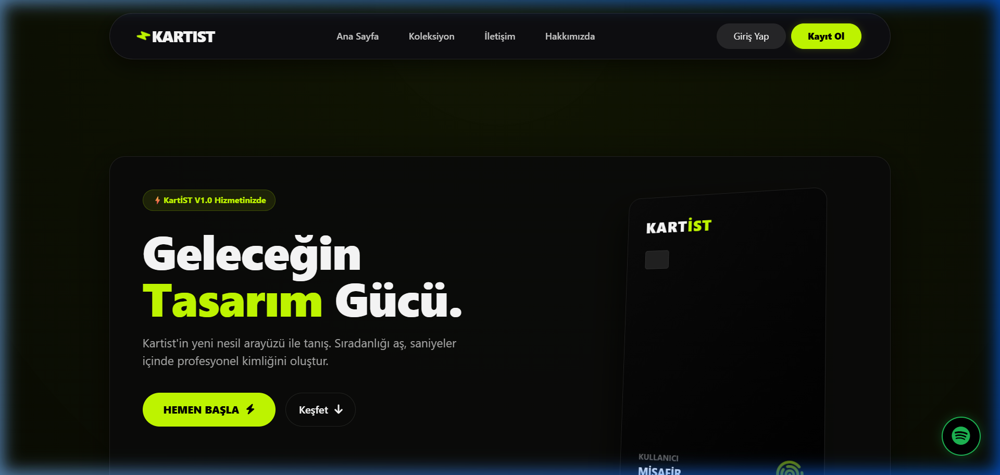
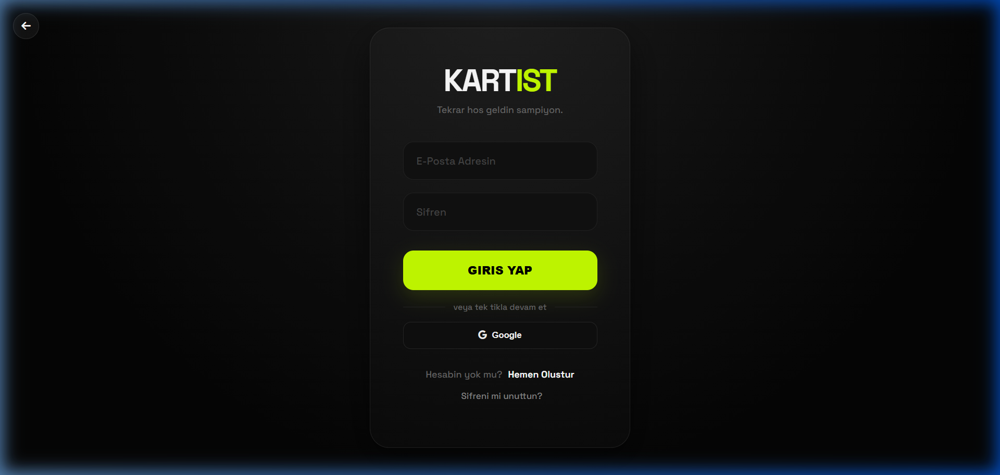
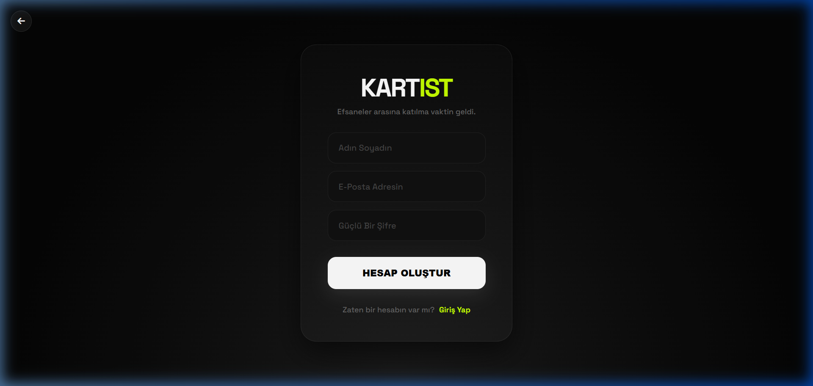
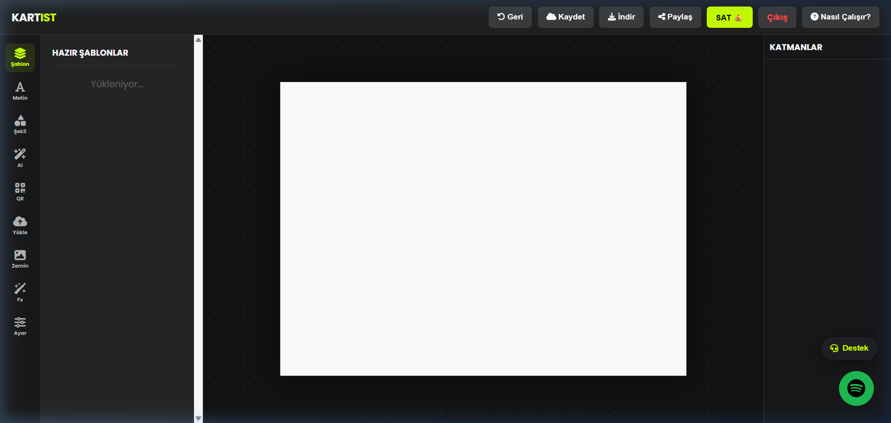

Bu rapor, Kartist web uygulamasının Sprint 1 (Güvenlik & Profiller) ve Sprint 2 (UI Kişiselleştirme & Canlı Destek) kapsamında yapılan tüm teknik geliştirmeleri detaylı olarak açıklamaktadır.
Kartist platformunun ana sayfa, giriş, kayıt ve tasarım editörü ekranları.




Sistemin kale gibi sağlamlaştırılması ve kullanıcı deneyiminin kişiselleştirilmesi.
Tüm HTTP yanıtlarına güvenlik başlıkları ekleyen özel bir ASP.NET Core middleware geliştirildi. Bu katman, uygulamayı XSS, Clickjacking, MIME Sniffing ve diğer yaygın web saldırılarına karşı korur.
// Her HTTP yanıtına eklenen güvenlik başlıkları context.Response.Headers.Append("X-XSS-Protection", "1; mode=block"); context.Response.Headers.Append("X-Frame-Options", "SAMEORIGIN"); context.Response.Headers.Append("X-Content-Type-Options", "nosniff"); context.Response.Headers.Append("Referrer-Policy", "strict-origin-when-cross-origin"); // Content Security Policy — hangi kaynakların yükleneceğini kontrol eder string csp = "default-src 'self'; script-src 'self' ..."; context.Response.Headers.Append("Content-Security-Policy", csp); // Sunucu bilgisi ifşasını engelle context.Response.Headers.Remove("Server"); context.Response.Headers.Remove("X-Powered-By");
Kullanıcı girdilerini SQL Injection ve XSS saldırılarına karşı filtreleyen merkezi bir doğrulama sınıfı oluşturuldu. Tüm controller'larda kullanıcı girdisi alınan her noktada bu validator kullanılıyor.
public static string SanitizeHtml(string input) { // <script>, <iframe>, onclick= gibi tehlikeli içerikleri temizler input = Regex.Replace(input, @"<script[^>]*>[\s\S]*?</script>", ""); input = Regex.Replace(input, @"javascript\s*:", ""); return input.Trim(); } public static bool IsValidInput(string input) { // SQL anahtar kelimelerini (UNION, SELECT, DROP vb.) kontrol eder string[] dangerousChars = { "'", "--", "union", "select", "drop", ... }; // ... }
| Metod | İşlevi |
|---|---|
SanitizeHtml() | HTML etiketlerini, script bloklarını ve event handler'ları temizler |
IsValidInput() | SQL Injection anahtar kelimelerini tespit eder |
IsValidPrompt() | AI prompt'larında XSS pattern'lerini kontrol eder |
IsValidEmail() | E-posta formatını RFC standardına göre doğrular |
IsValidImageFile() | Yüklenen dosya uzantısını whitelist'e göre kontrol eder |
SanitizeForDisplay() | HTML encode yaparak güvenli görüntüleme sağlar |
Giriş sayfasında art arda başarısız giriş denemelerini tespit eden ve belirli bir eşik aşıldığında hesabı geçici olarak kilitleyen bir mekanizma geliştirildi.
// Başarısız giriş sayacını artır int yeniSayac = (user.BasarisizGirisSayisi ?? 0) + 1; if (yeniSayac >= 5) { // 5 başarısız deneme sonrası kilitle db.Execute("UPDATE Kullanicilar SET BasarisizGirisSayisi = @s, HesapKilitliMi = 1, KilitBitisTarihi = @t WHERE Email = @e", new { s = yeniSayac, t = DateTime.Now.AddMinutes(15), e = email }); } // Başarılı girişte sayacı sıfırla db.Execute("UPDATE Kullanicilar SET BasarisizGirisSayisi = 0 WHERE Email = @e");
BasarisizGirisSayisi, HesapKilitliMi ve KilitBitisTarihi kolonları ile takip edilirE-posta tabanlı 2FA sistemi geliştirildi. Kullanıcılar profil ayarlarından 2FA'yı aktif ettiklerinde, her giriş denemesinde e-postalarına tek kullanımlık doğrulama kodu gönderilir.
Kullanildi = 1 olarak işaretlenir, tekrar kullanılamazHer giriş denemesi (başarılı veya başarısız), IP adresi ve User-Agent bilgisiyle birlikte GirisLoglari tablosuna kaydedilir. Bu, şüpheli aktivitelerin tespitini sağlar.
db.Execute(@"INSERT INTO GirisLoglari (KullaniciEmail, IpAdresi, BasariliMi, UserAgent) VALUES (@email, @ip, @basarili, @ua)", new { email, ip = remoteIp, basarili = basariliMi, ua = userAgent });
| Kolon | Veri Tipi | Açıklama |
|---|---|---|
| KullaniciEmail | NVARCHAR(256) | Giriş deneyen kullanıcının e-postası |
| IpAdresi | NVARCHAR(50) | İstemcinin IP adresi |
| BasariliMi | BIT | Giriş başarılı mı? |
| Tarih | DATETIME | İşlem zamanı (UTC) |
| UserAgent | NVARCHAR(500) | Tarayıcı/cihaz bilgisi |
Kullanıcıların profillerini portfolyo gibi sergileyebileceği, modern ve premium hissiyatlı bir dashboard tasarlandı. Glassmorphism efektleri, animasyonlu istatistik kartları ve responsive tab yapısı kullanıldı.
Dark tema (#0a0a0f arka plan) üzerine neon yeşil (#c6ff00) vurgu rengi kullanıldı. Inter font ailesi, subtle animasyonlar (slide-up, fade-in) ve hover micro-interaction'lar ile premium bir kullanıcı deneyimi hedeflendi. CSS değişkenleriyle (custom properties) tutarlı bir tasarım sistemi oluşturuldu.
Kullanıcıların kendi çalışma alanlarını yönetebilmesi ve anında destek alması.
Tasarım editöründe kullanıcıların çalışma tarzına göre arayüzü özelleştirebilmesi sağlandı. Araç kutusu yerleşimi (sol/sağ) ve karanlık/neon tema seçenekleri localStorage ile kalıcı hale getirildi.
// Kullanıcı tercihlerini localStorage'dan yükle function initEditorPrefs() { const theme = localStorage.getItem('editorTheme') || 'dark'; const toolsSide = localStorage.getItem('toolsSide') || 'left'; // Tema uygula document.body.classList.toggle('light-theme', theme === 'light'); // Araç kutusu konumunu değiştir if (toolsSide === 'right') { document.querySelector('.main-body').classList.add('layout-tools-right'); } }
layout-tools-right CSS sınıfıyla grid-template-areas değişimiEditör, Fabric.js kütüphanesiyle canvas manipülasyonu yapıyor. Canvas üzerinde metin ekleme, şekil çizme, resim yükleme, QR kod oluşturma, katman yönetimi, undo/redo ve buluta kaydetme gibi gelişmiş özellikler mevcut. Responsive tasarım için 480px, 768px, 992px breakpoint'lerinde farklı layout'lar uygulanıyor.
Kullanıcıların tasarım yaparken sistem yöneticilerine anında ulaşabileceği, gerçek zamanlı bir canlı sohbet sistemi SignalR hub yapısıyla geliştirildi.
public class AdminHub : Hub { // Kullanıcı mesajı → Adminlere ilet public async Task SendUserMessage(string email, string message) { var payload = new { from = "user", email, message = cleanMessage }; await Clients.Group("admins").SendAsync("SupportMessage", payload); await Clients.Group(email).SendAsync("SupportMessage", payload); } // Admin yanıtı → Kullanıcıya ilet public async Task SendAdminMessage(string email, string message) { var payload = new { from = "admin", email, message = cleanMessage }; await Clients.Group("admins").SendAsync("SupportMessage", payload); await Clients.Group(email).SendAsync("SupportMessage", payload); } }
SendUserMessage ve SendAdminMessage metotlarıyla iki yönlü iletişimOnConnectedAsync'te admin oturumu kontrol edilerek rol bazlı erişim sağlanırbuilder.Services.AddSignalR(); // DI Container'a SignalR ekle app.MapHub<AdminHub>("/adminHub"); // Hub endpoint'ini tanımla
Projede kullanılan teknolojiler ve mimari kararlar.
| Katman | Teknoloji | Sürüm / Not |
|---|---|---|
| Backend Framework | ASP.NET Core MVC | .NET 9 |
| ORM / Data Access | Dapper (Micro-ORM) | Parametrized queries ile SQL Injection koruması |
| Veritabanı | Microsoft SQL Server | MSSQL — Dapper ile bağlantı |
| Gerçek Zamanlı | SignalR | WebSocket tabanlı canlı iletişim |
| Kimlik Doğrulama | Cookie Authentication + Google OAuth | 2FA desteğiyle |
| Frontend | Vanilla JS + Fabric.js | Canvas editörü için |
| CSS | Custom CSS + CSS Variables | Dark theme, glassmorphism, responsive |
| Güvenlik | Custom Middleware + InputValidator | CSP, XSS, CSRF koruması |
| CSRF Koruması | AntiForgeryToken | AutoValidateAntiforgeryToken global filtre |
| Sıkıştırma | Brotli + Gzip | Response compression middleware |
Program.cs içindeki EnsureDatabaseSchema metodu ile otomatik oluşturulan şema değişiklikleri.
| Kolon | Tip | Sprint | Açıklama |
|---|---|---|---|
| BasarisizGirisSayisi | INT | Sprint 1 | Art arda başarısız giriş sayısı |
| HesapKilitliMi | BIT | Sprint 1 | Hesap kilitli mi? |
| KilitBitisTarihi | DATETIME | Sprint 1 | Kilidin otomatik açılacağı tarih |
| IkiFactorAktif | BIT | Sprint 1 | 2FA aktif mi? |
| Biyografi | NVARCHAR(500) | Sprint 1 | Kullanıcı bio metni |
| ProfilResmi | NVARCHAR(500) | Sprint 1 | Profil fotoğrafı URL'i |
| UyelikBitisTarihi | DATETIME | Sprint 1 | PRO üyelik bitiş tarihi |
| Tablo | Sprint | Açıklama |
|---|---|---|
| IkiFactorKodlari | Sprint 1 | 2FA doğrulama kodları (Email, Kod, BitisTarihi, Kullanildi) |
| GirisLoglari | Sprint 1 | Tüm giriş denemelerinin logu (Email, IP, Başarı, UserAgent, Tarih) |
Sprint 1 ve Sprint 2 kapsamında Kartist platformuna 6 güvenlik özelliği (Security Headers Middleware, InputValidator, Brute Force koruması, 2FA, Giriş loglama, CSRF), gelişmiş profil dashboard'u, editör kişiselleştirme ve SignalR canlı destek sistemi başarıyla entegre edilmiştir. Tüm özellikler, veritabanı şeması otomatik güncelleme (EnsureDatabaseSchema) mekanizmasıyla uyumlu çalışmakta ve responsive tasarımla mobil cihazlarda da sorunsuz şekilde kullanılabilmektedir.
Bu rapor Kartist geliştirme ekibi tarafından hazırlanmıştır.
© 2026 Kartist — Tüm hakları saklıdır.